| The data that produce these pictures are the proteins in amniotic fluid from 15 subjects. |
| Here the sequence is ordered by molecular weight, rather than by time. |
| Equal weight bins are used. |
| This is part of an on-going project, so clear interpretations are not available. |
| 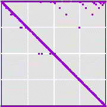 | 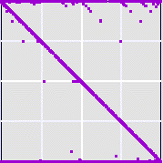 | 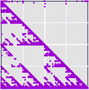 |
| 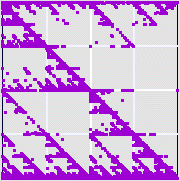 | |
| 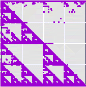 | 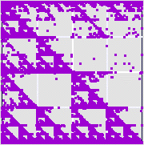 | |
| 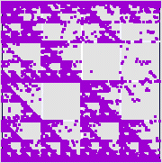 | 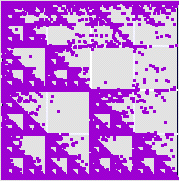 | 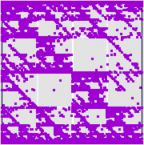 |
| 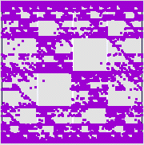 | 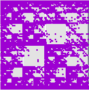 | 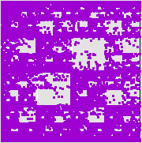 |
Return to Data-Driven IFS.